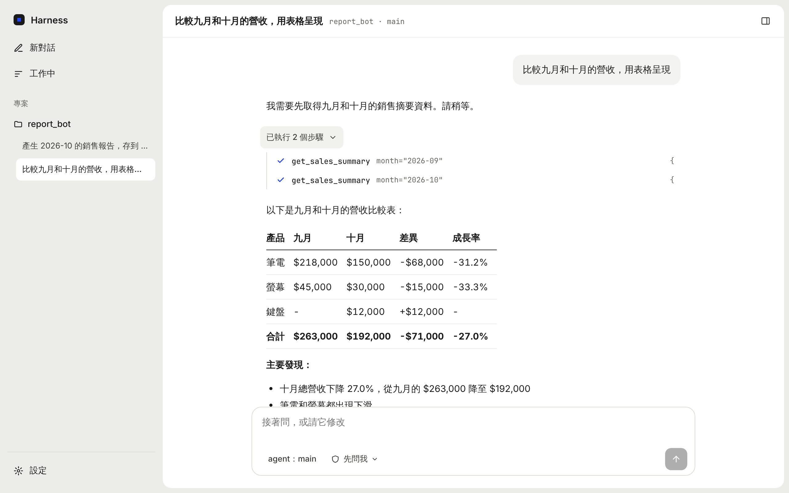
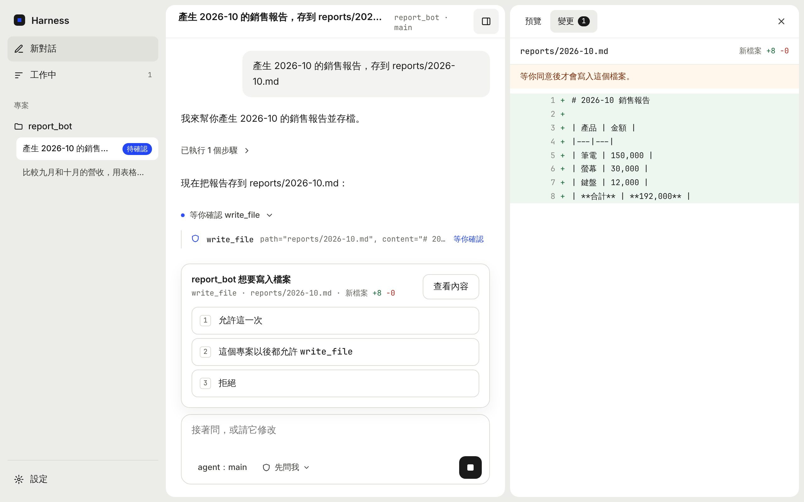
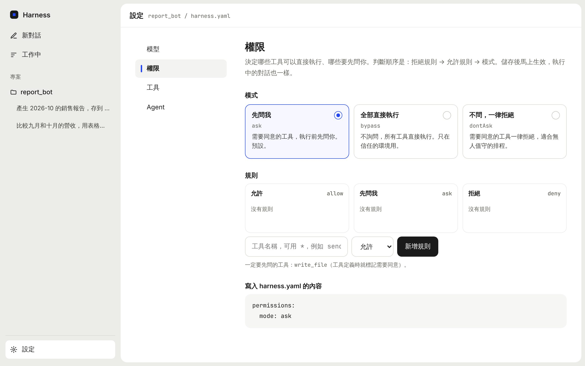

用幾個檔案定義 agent，
其餘交給框架。
Agent Harness 是完全開源、不綁定模型供應商的 agent harness。用一份 harness.yaml 和幾個 Markdown 檔定義 agent，用普通的函式或現成的 MCP 伺服器給它工具，再從命令列、網頁或自己的程式裡和它對話。
框架負責的事：呼叫模型、執行工具並把結果送回模型、保存與接續對話、在危險操作前取得使用者同意、在關鍵時間點插入自訂邏輯。提供 TypeScript 與 Python 兩個實作，共用同一種專案格式，對話紀錄也互通。
為誰而做
需要避開特定服務的組織
不依賴任何中國大陸的服務，也沒有內建的雲端服務。模型自己選：Claude、GPT、Gemini，或透過 Ollama 完全在本機執行。
想完全自己掌控的人
框架、網頁介面與範例都在 repo 裡。不需要註冊帳號、不收集使用資料，對話紀錄是存在專案資料夾的純文字檔，可部署在內網。
想學 agent 怎麼運作的人
TypeScript 版主迴圈約 300 行，執行時只有四個相依套件；兩種語言並排實作，註解與文件都是繁體中文。
運作方式
一個 agent 的核心就是一個迴圈：把對話送給模型 → 模型要求呼叫工具 → 框架檢查權限、執行工具、把結果送回 → 直到模型不再呼叫工具，回覆使用者。
功能總覽
不綁定模型
TypeScript 版連接任何 OpenAI 相容端點，Python 版透過 litellm 直連各家供應商。換模型只要改設定。
用檔案定義 agent
harness.yaml 加上 agents/*.md，不寫程式就能調整行為，也方便放進版控與審查。
工具來源不限
Python 函式、TypeScript 函式、現成的 MCP 伺服器，以及參考 Claude Code 與 Codex 設計的內建工具：檔案、搜尋、指令、計畫、網頁。
安全的預設值
權限模式與 allow / deny / ask 規則；會寄信、改資料、花錢的工具，執行前先問使用者。
Hooks
在工具執行前後、每一輪開始與結束時插入邏輯：稽核、攔截、改寫參數或結果。
可接續的對話
只附加、不改寫的 JSONL 對話紀錄，TypeScript 與 Python 兩個版本互通。
多種使用方式
命令列聊天、單次執行（排程與腳本）、網頁介面，或當成函式庫嵌進自己的服務。
進階能力 Python
多 agent 協作、知識庫（RAG）、skills、長期記憶、訊息防護、對話壓縮。
部署後就能用 Python
docker compose up -d 啟動，在網頁上填模型金鑰、上傳 Excel 或 PDF 請它分析；agent 寫的程式在隔離的 Docker 沙盒裡執行。
兩個版本
兩個版本使用同一種專案格式，對話紀錄也互通。差別在於工具怎麼接、能嵌進什麼程式。
| TypeScript 版 | Python 版 | |
|---|---|---|
| 指令 | harness | pyharness |
| Python 寫的工具 | 透過 MCP 伺服器（另一個行程） | 直接 import，加 @harness.tool |
| TypeScript 寫的工具 | 直接載入 tools/*.ts | 不支援 |
| 可以嵌進 | Node.js 服務 | Python 服務（FastAPI、Streamlit…） |
| 模型 | 任何 OpenAI 相容端點 | litellm（直連供應商或連端點） |
| 連接 MCP 伺服器 | ✓ | ✓ |
| 網頁版 | ✓ harness web | ✓ pyharness web |
| Subagents 與 handoffs | 尚未支援 | ✓ |
| 知識庫（RAG） | 尚未支援 | ✓ |
| Skills | 尚未支援 | ✓ |
| 長期記憶 | 尚未支援 | ✓ |
| 訊息防護 | 尚未支援 | ✓ |
| 對話壓縮 | 讀得懂壓縮紀錄，本身不壓縮 | ✓ |
| 在沙盒（Docker）裡執行程式 | 尚未支援 | ✓ |
| 架在伺服器上（登入密碼） | 尚未支援 | ✓ |
| 網頁上傳檔案 | 尚未支援 | ✓ |
| 在網頁上填模型的金鑰 | 尚未支援（用環境變數） | ✓ |
| 一行部署（Docker Compose） | 尚未支援 | ✓ |
怎麼選：工具是 Python、要嵌進 Python 網頁服務、要架在伺服器上給團隊用，或需要上面的進階功能 → Python 版。工具是 TypeScript、或要嵌進 Node.js 服務 → TypeScript 版。
快速部署 Python
只想架起來給自己或團隊用、不寫任何設定：需要一台裝好 Docker（Docker 26、Compose 2.24 以上）的電腦。
git clone https://github.com/xian-ai-1057/AgentHarness.git
cd AgentHarness
docker compose up -d # 第一次會建置映像檔，需要幾分鐘
docker compose logs harness # 看網址與自動產生的登入密碼- 登入：用瀏覽器打開
http://<這台電腦的位址>:4321，使用者名稱不限，密碼在上面的 log 裡。 - 連接模型：第一次會看到「先連接模型」，選供應商、貼上金鑰，按「測試連線並儲存」。
- 開始對話：可以直接上傳 Excel、PDF、CSV 請它分析。
| 項目 | 自動的做法 | 想自己指定時 |
|---|---|---|
| 專案 | 建立一個通用助手：讀寫檔案、列計畫、讀取網頁、記住交代的事、寫程式分析上傳的檔案 | 修改 volume 裡的 harness.yaml、agents/main.md |
| 登入密碼 | 第一次啟動時產生，之後沿用 | .env 的 HARNESS_WEB_PASSWORD |
| 模型與金鑰 | 在網頁上填寫 | .env 的 ANTHROPIC_API_KEY 等 |
| 沙盒 | 一併建置裝好 pandas、matplotlib 等套件的映像檔 | 修改 docker/sandbox.Dockerfile |
| 埠號 | 4321 | .env 的 HARNESS_PORT |
要調整時把 .env.example 複製成 .env 再修改。公司網路要透過 proxy 才能連外時，在 .env 寫上 HTTP_PROXY、HTTPS_PROXY、NO_PROXY，建置映像檔與執行時都會使用，但不會寫進映像檔。專案、對話紀錄、上傳的檔案與金鑰都在名為 harness-data 的 Docker volume 裡；更新版本用 git pull && docker compose up -d --build。
docker-compose.yml 把主機的 Docker socket 掛進容器，沙盒才能啟動容器，這等於擁有主機的 root 權限，請放在專用的機器或虛擬機上；不需要分析檔案時把那一行刪掉。這個設定是 http，只在內網或 VPN 裡使用，要從網際網路連線請加上 HTTPS 反向代理（見部署到伺服器）。不用 Docker 也可以：安裝 Python 版後在一個空的資料夾執行 pyharness web，同樣會自動建立助手、在網頁上填金鑰。
安裝
TypeScript 版
需要 Node.js 22.18 以上。
git clone https://github.com/xian-ai-1057/AgentHarness.git
cd AgentHarness
npm install # 安裝相依套件並編譯
npm install -g . # 讓 harness 指令在任何資料夾都能用只想在某個 Node.js 專案裡當函式庫用：
npm install github:xian-ai-1057/AgentHarnessPython 版
需要 Python 3.11 以上。
pip install "git+https://github.com/xian-ai-1057/AgentHarness.git#subdirectory=python"要連接 MCP 伺服器的話另外安裝 pip install "mcp>=2"。知識庫要讀 PDF 需要 [pdf]、加速語意檢索可裝 [vectors]。
設定模型
用三個環境變數決定連到哪裡：
| 環境變數 | 用途 |
|---|---|
HARNESS_BASE_URL | OpenAI 相容端點的網址 |
HARNESS_API_KEY | 端點的金鑰（本機端點可以不設） |
HARNESS_MODEL | 模型名稱，寫法由端點決定 |
直接連 Claude
Anthropic API 提供 OpenAI 相容的端點，兩個版本都可以直接連，不需要另外架 Proxy：
export HARNESS_BASE_URL=https://api.anthropic.com/v1
export HARNESS_API_KEY=... # Anthropic 的 API 金鑰
export HARNESS_MODEL=claude-sonnet-5-5用 LiteLLM Proxy 接任何模型
LiteLLM Proxy 是一個獨立的小服務，把各家模型轉成同一種介面：
# litellm_config.yaml
model_list:
- model_name: claude # 你在 harness 裡用的名稱
litellm_params:
model: anthropic/claude-opus-5-5
api_key: os.environ/ANTHROPIC_API_KEYlitellm --config litellm_config.yaml --port 4000
export HARNESS_BASE_URL=http://localhost:4000
export HARNESS_API_KEY=... # LITELLM_MASTER_KEY 的值
export HARNESS_MODEL=claude其他端點
| 端點 | HARNESS_BASE_URL | HARNESS_MODEL 範例 |
|---|---|---|
| OpenAI | 不用設（設 HARNESS_API_KEY 即可） | gpt-5 |
| OpenRouter | https://openrouter.ai/api/v1 | nousresearch/hermes-4-405b |
| Ollama（本機） | http://localhost:11434/v1 | hermes3 |
Python 版不設 HARNESS_BASE_URL 時，會用 litellm 直接連供應商，模型寫成 anthropic/claude-opus-5-5 這種格式，金鑰用各供應商自己的環境變數（例如 ANTHROPIC_API_KEY）。
Python 版的網頁也可以直接選供應商（Anthropic、OpenAI、Google、OpenRouter、Ollama 或自己的 OpenAI 相容端點）並貼上金鑰，見網頁版。
決定模型的順序：命令列 -m → agent 檔案的 model → harness.yaml 的 model → 環境變數 HARNESS_MODEL。其他參數寫在 modelParams，會原樣放進請求：
modelParams:
max_tokens: 8000
reasoning_effort: high快速開始
- 建立專案
harness new my_bot # Python 工具（預設） harness new my_bot --lang ts # 或 TypeScript 工具 cd my_bot - 安裝工具伺服器需要的套件（Python 工具才需要）
pip install "mcp>=2" - 開始對話
harness chat # 命令列聊天 harness web # 或開網頁版 http://127.0.0.1:4321
想先看完整的例子：examples/report_bot 把一個 Python 銷售報告程式包成三個工具，示範怎麼為現有的程式碼加上 agent。
cd examples/report_bot
pip install -r requirements.txt
harness run "資料裡有哪些月份？最新那個月的總營收是多少？" ⚙ list_months({})
⚙ get_sales_summary({"month":"2026-10"})
根據查詢結果：
- 筆電：150,000 元
- 螢幕：30,000 元
- 鍵盤：12,000 元
- 合計：192,000 元已有一套程式碼、想讓 agent 使用它的功能？見 為既有專案加上 agent。
專案格式
my_bot/
├── harness.yaml 名稱、模型、預設 agent、權限、工具伺服器
├── AGENTS.md 專案共用的背景知識，接在每個 agent 的指示後面
├── agents/
│ └── main.md 一個檔案一個 agent
├── tools/
│ ├── server.py Python 工具（MCP 伺服器，或 Python 版直接 import）
│ └── extra.ts TypeScript 工具（可省略）
└── .harness/ 對話紀錄（自動產生，不用進版控）harness.yaml
name: my_bot
defaultAgent: main
model: claude # 可省略，改用 HARNESS_MODEL
mcpServers:
report: # 伺服器名稱，也是這組工具的 toolset 名稱
command: python3
args: [tools/server.py]
permissions:
mode: askagents/main.md
開頭是設定，內文就是給模型的指示：
---
name: main
description: 回答銷售問題並產生銷售報告
tools:
- report # harness.yaml 裡名為 report 的伺服器的所有工具
- files # 內建的檔案工具
---
你是銷售報告助手。需要數字時一定要呼叫工具取得，不要自己估算。tools 可以寫 toolset 名稱或單一工具名稱。toolset 有三種：mcpServers 裡的伺服器名稱、tools/ 底下 TypeScript 檔的檔名、內建的 files、shell、plan、web。不寫的話 agent 可以使用專案裡所有的工具（不含內建工具）。
撰寫工具
工具就是普通的函式。參數格式來自型別，說明來自 docstring 或 description——這段說明就是給模型的使用手冊，寫得越具體，模型越知道什麼時候呼叫、參數怎麼填。
Python 版：加上 @harness.tool
import harness
from my_project import reports
@harness.tool
def build_report(month: str, detailed: bool = False) -> str:
"""產生某個月份的銷售報告。
Args:
month: 月份，格式為 YYYY-MM。
detailed: 是否包含每筆交易的明細。
"""
if not reports.has_data(month):
raise harness.ToolError(f"{month} 沒有資料，請先用 list_months 確認")
return reports.build(month, detailed)- 出錯就直接
raise，錯誤訊息會送回給模型，它會自己修正或換個做法，對話不會中斷。 - 回傳值可以是字串、dict、list 或 pydantic 模型。同步與
async函式都支援，同時被呼叫的工具會平行執行。 - 會寄信、寫檔、改資料的工具加上
needs_approval=True。
TypeScript 版：tools/*.ts
匯出一個物件即可，不需要安裝任何套件：
// tools/text.ts
export const wordCount = {
name: "word_count",
description: "計算一段文字的字元數與行數。",
parameters: {
type: "object",
properties: { text: { type: "string", description: "要計算的文字" } },
required: ["text"],
},
execute: ({ text }: { text: string }) => ({
characters: text.length,
lines: text.split("\n").length,
}),
};有安裝 zod 時，改用 tool() 可以自動驗證參數並推導型別，並用 needsApproval: true 標記需要同意。
透過 MCP 伺服器
TypeScript 版用 MCP 接 Python 寫的工具：在 harness.yaml 的 mcpServers 設定啟動指令，harness 會自動啟動並連上它。任何現成的 MCP 伺服器也用同樣方式接，兩個版本設定相同。
# tools/server.py
from mcp.server.mcpserver import MCPServer
mcp = MCPServer("report")
@mcp.tool()
def build_report(month: str) -> str:
"""產生某個月份的銷售報告。"""
...
if __name__ == "__main__":
mcp.run()內建工具
設計參考 Claude Code 與 Codex，兩個版本的名稱、參數與輸出都相同。要在 agent 的 tools 明確列出才會啟用。
| toolset | 工具 | 用途 |
|---|---|---|
files | read_file、list_dir、find_files、search_files、write_file*、edit_file* | 讀取（可分段）、依檔名或內容搜尋、寫入與精準修改專案內的檔案 |
shell | run_command* | 在專案資料夾執行指令，回傳結束代碼與輸出，有逾時 |
plan | update_plan | 列出多步驟工作的計畫並更新進度 |
web | web_fetch* | 讀取網址，HTML 轉成純文字 |
sandbox Python | run_python | 在拋棄式 Docker 容器裡執行 agent 寫的 Python 程式，見在沙盒裡執行程式 |
* 預設需要使用者同意。所有路徑都限制在專案資料夾裡。
權限
permissions:
mode: ask # ask / bypass / dontAsk
allow: ["send_report"]
deny: ["delete_*"]
ask: ["send_*"]| 模式 | 行為 |
|---|---|
ask（預設） | 需要同意的工具，執行前先問使用者 |
bypass | 全部直接執行（命令列的 --bypass） |
dontAsk | 不詢問；需要同意的工具一律拒絕，適合無人值守的排程 |
「需要同意的工具」是名稱符合 ask 規則的工具，以及定義時就標記的工具（TypeScript 的 needsApproval、Python 的 needs_approval、MCP 的 destructiveHint、內建的 write_file）。判斷順序：deny 規則 → allow 規則 → 模式。規則是工具名稱的萬用字元樣式。
Hooks
在固定時間點插入自己的邏輯，例如稽核紀錄、攔截危險操作、遮蔽敏感資料。
import { deny, Hooks, run } from "agent-harness";
const hooks = new Hooks()
.on("preToolUse", (call) => {
if (call.name === "send_report" && isWeekend()) return deny("週末不寄信");
})
.on("postToolUse", (call, result, context) => {
console.log(context.sessionId, call.name, result.isError);
});
await run(agent, "把報告寄給老闆", { hooks });| 事件 | 可以做什麼 |
|---|---|
runStart | 記錄這一輪的輸入 |
preToolUse | 回傳 deny(原因) 攔截、allow() 略過詢問，或修改參數 |
postToolUse | 修改工具結果 |
runEnd | 記錄用量、發送通知 |
Python 版的事件名稱是 run_start、pre_tool_use、post_tool_use、run_end。
對話紀錄
每段對話存成 .harness/sessions/ 底下的一個 JSONL 檔，只附加、不改寫。命令列用 -c 接續最新的對話、-r <ID> 接續指定的對話。
兩個版本互通：同一段對話可以先用 harness 開始，再用 pyharness 接著問，反過來也可以。Python 版壓縮過的對話，TypeScript 版也讀得懂。
harness run --bypass "產生 2026-09 報告並存到 reports/sep.md"
pyharness run -c "上一個步驟你存了哪個檔案？"
# → 我存了 reports/sep.md。命令列
harness new <資料夾> [--lang python|ts] 建立新專案
harness chat 開始聊天
harness run "<訊息>" 執行一次後結束（適合排程與腳本）
harness web 開啟網頁版
chat 與 run 共用的選項：
-p, --project <資料夾> 專案位置（預設為目前資料夾）
-a, --agent <名稱> 使用哪個 agent
-m, --model <名稱> 覆寫模型
-c, --continue 接續最新的對話
-r, --resume <ID> 接續指定的對話
--bypass 所有工具都不詢問直接執行
web 的選項：
-p, --project <資料夾> 專案位置
--port <埠號> 預設 4321
--host <位址> 預設 127.0.0.1（只有本機能連）Python 版的 pyharness 有相同的指令，另外還有 pyharness memory（管理長期記憶）、pyharness knowledge（檢查知識庫）與 pyharness sandbox（檢查沙盒能不能正常執行程式）；pyharness web 多了 --allowed-host 與 --max-upload-mb，在空資料夾執行時會自動建立可以直接使用的助手。聊天時按 Ctrl-C 只會中斷目前這一輪。
網頁版
在專案資料夾執行 harness web 或 pyharness web。兩個版本用同一份前端與同一套 API，畫面完全一樣，也和命令列共用同一份對話紀錄。


- 權限確認：「允許這一次」、「這個專案以後都允許」（寫進
harness.yaml的allow）或拒絕，也可以按 1、2、3。 - 同時跑好幾段對話：「工作中」列出所有正在跑、等你確認的對話，可以直接在列表上允許、拒絕或停止。
- 出錯與重試：連不上模型時顯示原因，修好後按重試，從原本的訊息接著跑。
- 設定：修改模型、
maxTurns、權限模式與規則，儲存時寫回harness.yaml並保留原本的註解。TypeScript 版的端點與金鑰來自環境變數，網頁只顯示狀態。 - 連接模型 Python：選供應商、貼上金鑰，伺服器先實際連一次模型，連得上才儲存。金鑰存在
.harness/secrets/（權限 600），內建檔案工具與沙盒都讀不到。 - 上傳檔案 Python：按迴紋針、拖曳或貼上，把檔案附在訊息上。檔案存在沙盒工作目錄的
uploads/，agent 可以直接用run_python解析；單一檔案預設最多 50 MB。

--host 0.0.0.0 並自行加上防火牆或反向代理的保護；要架給團隊用，請用 Python 版（見部署到伺服器）。嵌進自己的程式
TypeScript
import { createSession, defineAgent, run, runStream } from "agent-harness";
const agent = defineAgent({
name: "report_bot",
instructions: "你是銷售報告助手。",
tools: [buildReport],
model: "claude",
});
const session = createSession("data/sessions"); // 存成 JSONL
const result = await run(agent, "給我十月的報告", { session });
console.log(result.output);
for await (const event of runStream(agent, "跟九月比呢？", { session })) {
if (event.type === "text_delta") process.stdout.write(event.text);
}事件種類：text_delta、message、tool_call、tool_result、run_end。用 loadProject() 可以直接載入專案資料夾。
Python
import harness
from harness import sessions
agent = harness.Agent(
name="report_bot",
instructions="你是銷售報告助手。",
tools=[build_report],
)
session = sessions.create("data/sessions")
result = await harness.run(agent, "給我十月的報告", session=session)
print(result.output)可以嵌進 FastAPI、Streamlit 等 Python 網頁服務；詳見 Python 版 README。
多個 agent 協作 Python
一個 agent 可以找其他 agent 幫忙，有兩種方式，差別在於對話歸誰。
| Subagent | Handoff | |
|---|---|---|
| 做什麼 | 把一件工作交出去，拿回結果 | 把整段對話交出去 |
| 對方看得到目前的對話嗎 | 看不到，只收到交辦內容 | 看得到全部 |
| 誰回答使用者 | 原本的 agent | 接手的 agent |
| 適合 | 查資料、讀長文件等會佔大量 context 的工作 | 不同職責的窗口，例如總機轉帳務 |
---
name: billing
description: 處理帳單與退款 # 模型靠 description 決定要不要找它
subagents: [researcher] # 工具名稱：ask_researcher
handoffs: [main] # 工具名稱：transfer_to_main
---
你是帳務專員。需要查訂單時交給 researcher。兩者都以工具的形式提供給模型，所以權限規則與 hooks 都管得到，例如 permissions.ask: ["transfer_to_*"]。subagent 最多 3 層。
知識庫（RAG）Python
把 .md、.txt、.pdf 放進 knowledge/，在 agent 設定 knowledge: true，它就會得到 search_knowledge 工具，結果附上出處，例如 來源：hr/leave.md › 請假規定 › 特休。
- 預設用關鍵字比對（BM25），不需要任何模型，中文也能用。
- 設定
embeddingModel後加上語意檢索（hybrid search）；可再加相似度門檻與 reranker。 - 檔案改了會自動重建索引；也可以依部門限制可搜尋的文件。
knowledge:
path: knowledge
embeddingModel: openai/text-embedding-3-small # 省略時只用關鍵字
chunkSize: 800
minSimilarity: 0.3
reranker: cohere/rerank-v3.5Skills Python
把一段任務指示（加上專屬工具與參考檔案）打包成 skill。agent 平常只看到每個 skill 的名稱與一句說明，判斷用得到時才用 load_skill 讀進完整指示，專屬工具也在這時才開放——掛很多 skill 也不會塞滿 system prompt。
skills/
└── refund/
├── SKILL.md
└── policy.md 參考檔案，agent 用 read_skill_file 讀取---
name: refund
description: 處理退款申請，依退款政策判斷能不能退
tools: [find_order, issue_refund]
---
1. 先用 find_order 查訂單，確認付款日期。
2. 讀 policy.md 判斷是否在可退款期間內。
3. 符合條件才呼叫 issue_refund。agent 沒寫 skills 欄位時可以使用全部 skill；skills: [refund] 指定、skills: [] 表示不用。
內建 skills
框架附帶 skill-creator、code-review、debugging、planning、web-research、git-commit，在 agent 的 skills 欄位列出名稱就能使用。專案 skills/ 裡有同名的 skill 時以專案的為準。
長期記憶 Python
在 harness.yaml 寫 memory: true。使用者說「請記住……」時，agent 用 remember 工具存下來，之後每段新的對話都會帶入；要求忘記時用 forget。
pyharness memory # 列出所有記憶
pyharness memory forget <識別碼> # 刪除一則
pyharness memory clear # 全部刪除嵌進網頁服務時，每個使用者用自己的 MemoryStore 檔案。
訊息防護 Python
在訊息交給模型前與回覆送給使用者前檢查內容，由框架執行，模型無法繞過。
guardrails:
maskPii: true # 遮蔽 Email、台灣手機號碼、身分證字號、信用卡號
blockInjection: true # 擋下「忽略之前的指示」等提示注入
blockedWords: [內線消息, 保證獲利]maskPii：個資先換成[已遮蔽 Email]這類標記，模型與對話紀錄都只看到遮蔽後的內容。blockInjection、blockedWords：被擋下的訊息不會送給模型，也不會寫進紀錄。
偵測是規則比對，能擋下常見寫法但不保證完整；需要更嚴格時，在同樣的 hooks 事件掛自己的檢查。
對話壓縮 Python
對話接近模型的上下文上限時，把較舊的歷史濃縮成檢查點，讓長時間的工作可以繼續：
- 每次呼叫模型前估算請求大小，超過上限的 80% 時開始壓縮。
- 先修剪超大的工具結果（只留開頭與結尾），不呼叫模型。
- 還是太長時，請模型把較舊的歷史摘要成固定結構的檢查點，最近約 15% 的對話保留原文。
- 模型回報超過上限時，盡量壓縮後重試一次。
對話紀錄不會被改寫：壓縮以額外的紀錄附加在 JSONL 裡，原始訊息完整保留。聊天時輸入 /compact 可以手動壓縮。
compaction:
contextWindow: 128000 # 自架端點、Proxy 的模型要寫，否則不會主動壓縮
thresholdRatio: 0.8
retainRatio: 0.15在沙盒裡執行程式 Python
解析文件、分析資料時，事先無法預期的分析需要 agent 自己寫程式。這些程式由模型產生，所以每次都放進一個拋棄式的 Docker 容器執行，不直接在主機上跑。
# harness.yaml（全部用預設值的話寫 sandbox: true）
sandbox:
image: harness-sandbox # 預設 python:3.12-slim
workspace: workspace # 掛載到容器 /workspace 的資料夾
timeoutSeconds: 60
memory: 1g
cpus: 1
network: false
notes: 已安裝 pandas、numpy、openpyxl、pdfplumber、python-docx、matplotlib。---
name: analyst
description: 解析文件並分析資料
tools: [sandbox, files] # 和 files 一樣要明確列出
---
需要計算或解析檔案時，寫 Python 程式用 run_python 執行，不要自己心算。- 每次執行都是全新的容器，執行完就刪除；要沿用的結果寫成檔案。
- 預設沒有網路，並限制時間、記憶體、CPU 與行程數；系統目錄唯讀、拿掉所有 capabilities、不以 root 執行。
- 只掛載
workspace一個資料夾。它不能是專案根目錄，也不能放在tools/、agents/、skills/、.harness/裡，以免容器裡的程式改寫主機會執行的檔案。 - 用
pyharness sandbox檢查 Docker、映像檔與限制是否正常。
部署到伺服器 Python
把 pyharness web 架在一台伺服器上，使用者用瀏覽器連線。最省事的做法是快速部署；不用 Docker 時：
export HARNESS_WEB_PASSWORD='一組夠長的隨機密碼' # 不設的話第一次啟動時自動產生
pyharness web -p /srv/my_bot --allowed-host ai.example.com- 讓其他電腦連線時一定要有登入密碼（HTTP Basic Auth，使用者名稱不限）。沒設定時會自動產生一組，存在
.harness/secrets/web-password。 --allowed-host是使用者在網址列輸入的主機名稱；放在 nginx 等 HTTPS 反向代理後面時，記得傳遞原本的Host並關閉緩衝（串流回覆需要）。- 可以用 systemd 讓它常駐；完整的 nginx 與 systemd 設定見 Python 版 README。
閱讀原始碼
想了解 agent harness 怎麼運作，建議照這個順序讀 TypeScript 版（src/）：
| # | 檔案 | 內容 |
|---|---|---|
| 1 | types.ts | 訊息、工具呼叫、執行結果等共用資料型別 |
| 2 | loop.ts | 主迴圈：呼叫模型 → 執行工具 → 把結果送回 |
| 3 | model.ts | 呼叫 OpenAI 相容端點；測試時可換成假的模型 |
| 4 | tool.ts | 工具的定義方式與參數驗證 |
| 5 | permissions.ts、hooks.ts | 工具執行前的權限判斷與自訂邏輯 |
| 6 | session.ts | 對話紀錄怎麼存成 JSONL、怎麼接續 |
| 7 | mcp.ts、project.ts | 連接 MCP 伺服器、載入專案資料夾 |
| 8 | builtin/ | 內建工具：檔案、搜尋、指令、計畫、網頁 |
Python 版（python/src/harness/）結構相同，另有 delegation.py（多 agent）、knowledge.py（知識庫）、compaction.py（壓縮）、sandbox.py（沙盒）等進階功能。
設計參考了 OpenAI Agents SDK、Claude Agent SDK / Claude Code、Hermes Agent 與 DeepSeek Harness。
目前的限制
- Python 程式不能直接呼叫 TypeScript 版；要嵌進 Python 服務請用 Python 版。
- TypeScript 版的
deps不會傳到 Python 工具伺服器（獨立行程），一個伺服器只適合服務一位使用者。 - Subagents、handoffs、知識庫、skills、長期記憶、訊息防護、自動壓縮、沙盒目前只有 Python 版支援；TypeScript 版會忽略相關設定，專案仍可執行（但 agent 的
tools列了sandbox時無法載入）。 - 網頁版的登入密碼、上傳檔案、在網頁上連接模型與 Docker Compose 部署目前只有 Python 版支援。
- 網頁版沒有分帳號：所有登入的人共用同一組密碼、看得到同樣的對話與上傳的檔案。
- 還沒有 Slack / Telegram 等訊息平台的接口。
- 網頁版的「工作中」只列出這次啟動伺服器後跑過的對話。